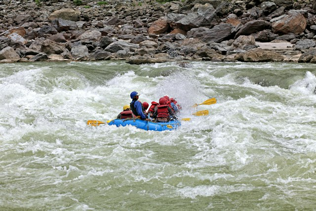
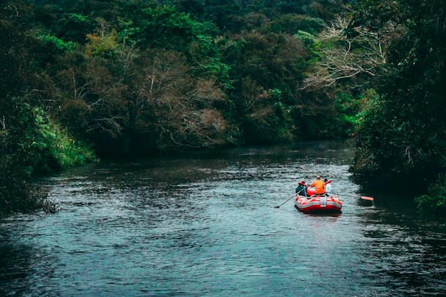
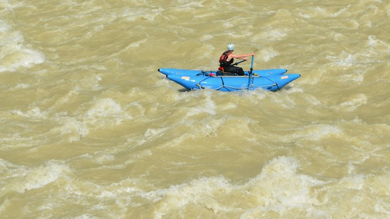
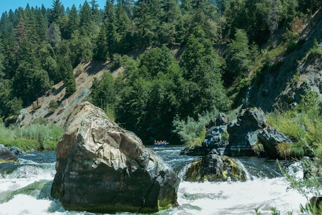

Trips
Otter Bend Float
Level: Class I to II, Family Friendly, ages 8+
A half day drift through calm water and gentle riffles. Guides handle the steering, kids get swim stops and a riverside snack break.

First Run Rapids
Level: Class II to III, Beginner
A full day introduction to real whitewater. Starts with a paddle and safety clinic on the bank, then a steady run of splashy, forgiving rapids.

Thunder Gorge Expedition
Level: Class IV to V, Advanced
Two days through steep-walled canyon rapids with technical drops and tight lines. Prior Class III experience and a swim test required. Overnight camp on the river.


Join Us